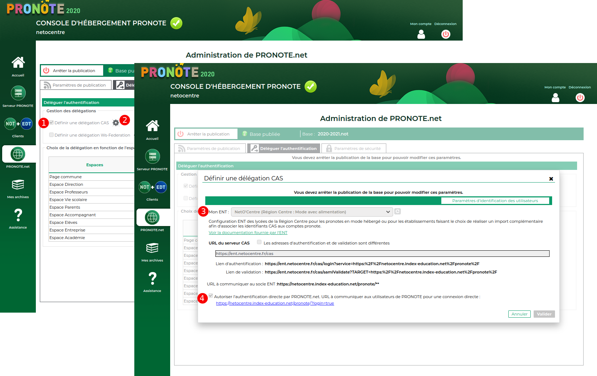

Configuration d'un Pronote.net hébergé chez Index Éducation
2 possibilités sont offertes, au choix de l'établissement :
- pratiquer une double authentification (fournir aux utilisateurs leur identifiant pronote en plus de l'identifiant EduConnect)
- effectuer un rapprochement des comptes PRONOTE et ENT (ne fournir aux usagers que l'identifiant EduConnect).
- Dans le premier cas après s'être authentifié à l'ENT l'utilisateur devra saisir ses identifiants Pronote lors de son premier accès à Pronote au travers de l'ENT.
Par la suite, l'identification Pronote ne sera plus nécessaire car Pronote aura conservé la clé d'identification ENT de la personne.
Dans ce cas, c'est donc l'utilisateur qui réalise le rapprochement de son compte ENT avec son compte pronote.
Si un nouveau compte ENT pour la personne est généré, il faudra supprimer l'ancienne clé d'identification ENT associée au compte Pronote dans la base Pronote.
Cette clé d'identification est nommés identifiant CAS dans pronote.
Cette configuration est très satisfaisante pour respecter le consentement des utilisateurs au rapprochement de leur compte ENT avec leur compte Pronote,
mais elle ajoute une complexité importante à l'administration du dispositif (distribution du compte EduConnect + distribution du compte Pronote avec toutes les incompréhensions qui en découlent, notamment lorsque les mots de passe sont oubliés).
- Dans le second cas le
rapprochement des comptes ENT et Pronote est effectué par l'administrateur Pronote via des imports complémentaires dans la base Pronote.
Pour effectuer la configuration, il faut se rendre sur la console d'hébergement, normalement accessible ici :
https://hebergement.index-education.net/.
Si vous avez enregistré votre certificat vous devriez pouvoir accéder à la configuration du Pronote.net.
Si ce n'est pas le cas, Index Éducation fournit les documentations et l'assistance (via son support SAV) nécessaires.
Voici une copie d'écran de la configuration à réaliser afin de rendre accessible Pronote en mode hébergé dans l'ENT
(basée sur Pronote 2018 et avec l'exemple de NetO'centre, mais le principe est identique sur les versions suivantes et pour les autres ENT) :

Sur cet écran, il faut effectuer les opérations suivantes :
- Cocher la case "Activer l'authentification avec CAS"
- Choisir, pour "Mon ENT" l'ENT qui correspond à votre établissement
- Si en parallèle à la connexion ENT, l'établissement souhaite donner accès à Pronote en connexion directe, c'est à dire avec les identifiants Pronote,
il faut cocher la case correspondante.